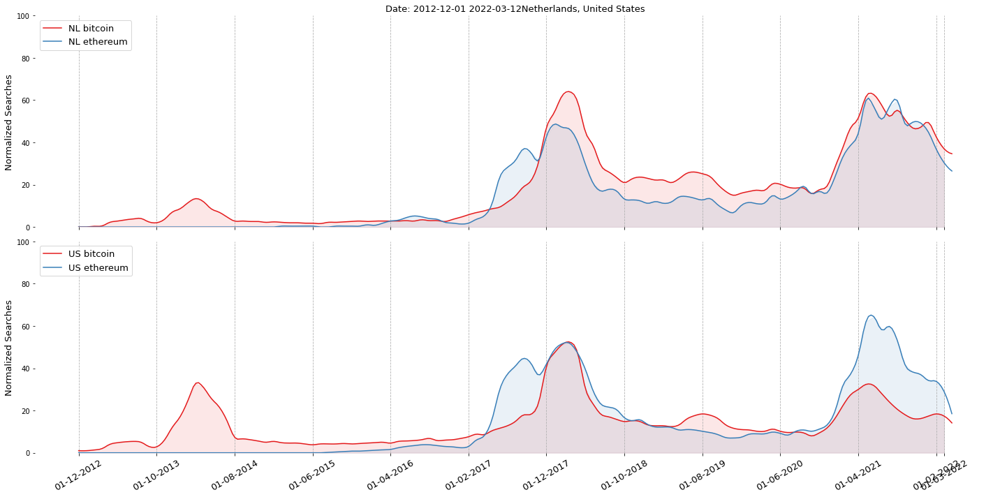
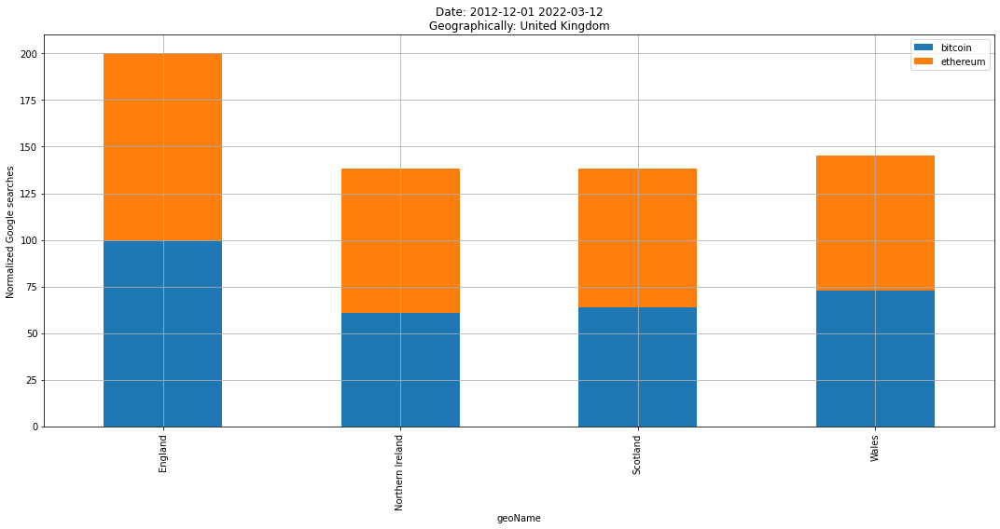
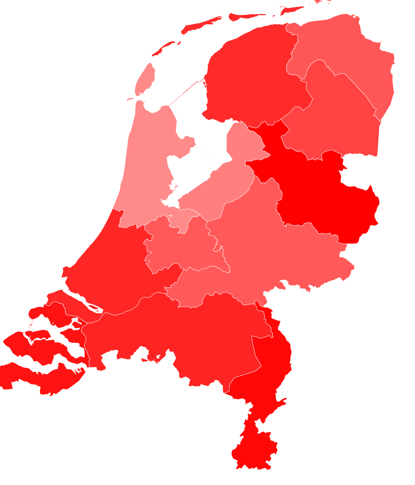
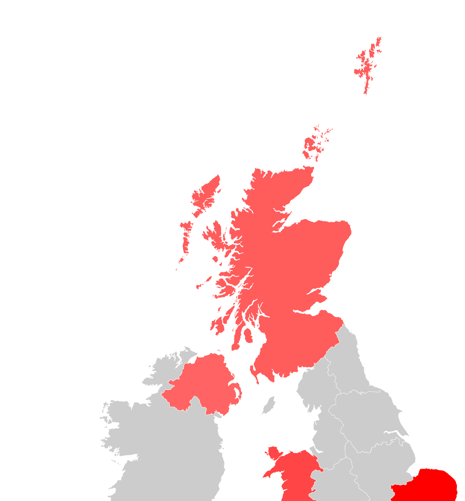
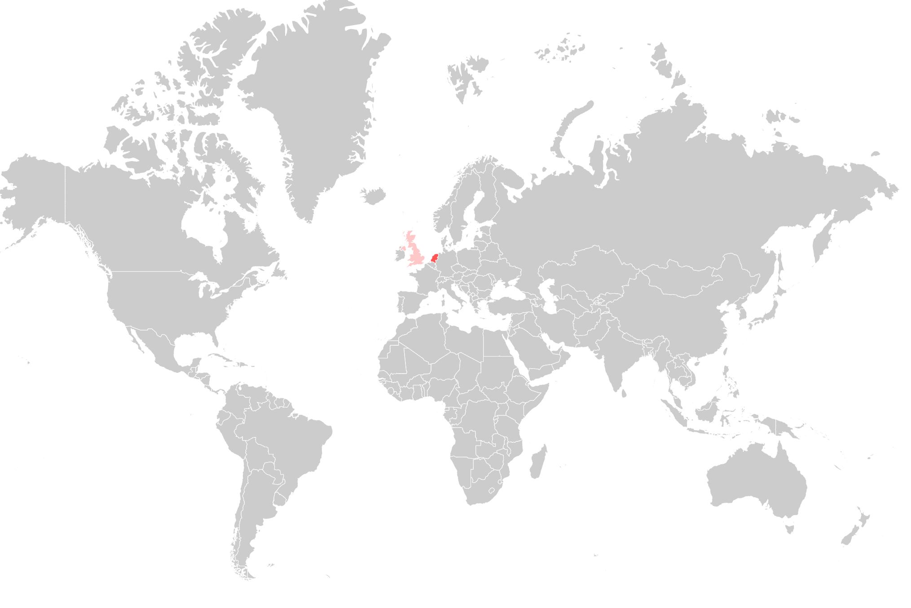

Get country names and abbrevations
The country name is required for the majority of fucntions. Here we will demonstrate how to view all 255 available countries that can be used to analyze trends.
# Import
import googletrends as googletrends
# Get country names
geo_names = googletrends.get_geo_names()
print(geo_names)
# code country
# 0 AD andorra
# 1 AE united arab emirates
# 2 AF afghanistan
# 3 AR argentina
# 4 AO angola
# .. ... ...
# 251 YE yemen
# 252 YT mayotte
# 253 ZA south africa
# 254 ZM zambia
# 255 ZW zimbabwe
Analyze Timewise
In this example multiple searchwords are examined for multiple countries over time. Countries can be in the form of their abbrevation or country name. The until date is not given and automatically set on today.
# Import
import googletrends as googletrends
# Settings
searchwords = ['bitcoin', 'ethereum']
geo = ['NL', 'united states']
date_start = '01-12-2012'
# Collect the google trends since 2012
results = googletrends.temporal(searchwords, geo=geo, date_start=date_start)
# [googletrends] Collecting trends over time for geographically: ['NL', 'US']
# [googletrends] 01 December 2012 - 12 March 2022
# [googletrends] [NL] Working on bitcoin..
# [googletrends] [NL] Working on ethereum..
# [googletrends] [US] Working on bitcoin..
# [googletrends] [US] Working on ethereum..
# Plot
googletrends.plot(results)
 |
Analyze Timewise with groupby
The plot can be created in various manners, by using different groupby’s and coloring on searchwords. Let’s see what happens if use other groupings and coloring.
googletrends.plot(results, color_by_searchword=True, group_by_searchword=False)
googletrends.plot(results, color_by_searchword=False, group_by_searchword=False)
googletrends.plot(results, color_by_searchword=False, group_by_searchword=True)
googletrends.plot(results, color_by_searchword=True, group_by_searchword=True)
|
|
|


Analyze Geographical
In this example multiple searchwords are examined across multiple countries. The input for a country can be in the form of the abbrevation or country name. If the until date is not given, it will be set on today.
# Import
import googletrends as googletrends
# Settings
searchwords = ['bitcoin', 'ethereum']
geo = ['NL', 'united kingdom']
date_start = '01-12-2012'
# Collect the google trends since 2012
results_spatio = googletrends.spatio(searchwords, geo=geo, date_start=date_start)
# [googletrends] 01 December 2012 - 12 March 2022
# [googletrends] [NL] Working on bitcoin..
# [googletrends] [NL] Working on ethereum..
# [googletrends] [GB] Working on bitcoin..
# [googletrends] [GB] Working on ethereum..
# Plot
googletrends.plot(results_spatio)
|
 |
 |
 |
 |
|

Analyze Trends
In this example multiple searchwords are examined across multiple countries. The input for a country can be in the form of the abbrevation or country name. If the until date is not given, it will be set on today.
# Import
import googletrends as googletrends
# Settings
searchwords = ['bitcoin', 'ethereum']
geo = ['NL', 'united kingdom']
date_start = '01-12-2012'
# Analyze the trends for the searchwords
results_trending = googletrends.trending(searchwords, geo=geo, date_start=date_start)
googletrends.plot(results_trending)
# --------[NL]--------
# [bitcoin]
# Top: 25
# Rising: 25
# Trending: 20
# [ethereum]
# Top: 20
# Rising: 20
# Trending: 20
|